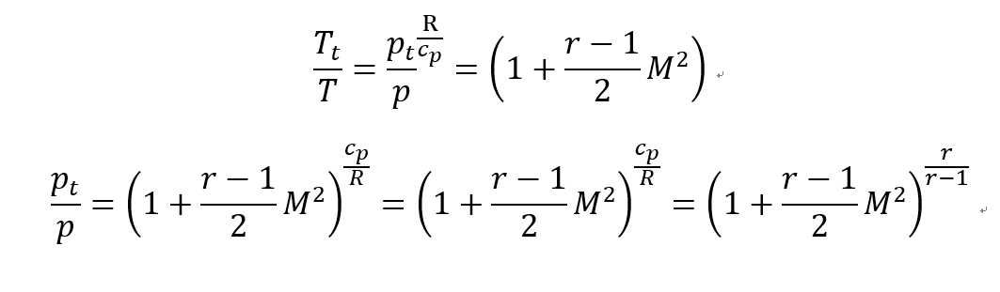
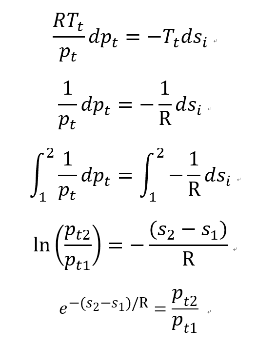

자 이제 Ma를 이용하여 이상기체 일때 다른 property들을 표현해보자
1. mass flow rate
이상기체 상태방정식 P=
ρRT , M = V/a를 대입하면
![[Gas Dynamics] Ch 4 Introduction to Compressible Flow - part2](./images/img-001.png)
2. Stagnation Enthalpy (ht)
Stagnation Enthalpy 에서 potential term을 무시후, ch3 stagnation enthalpy 식을 유도했었다.
dh = CpdT 임을 이용하여 대입하면, (Specific heat constant의 정의)
다음과 같은 식을 유도할 수 있다.
![[Gas Dynamics] Ch 4 Introduction to Compressible Flow - part2](./images/img-002.png)
뿐만아니라 Cp가 일정하다고 가정하고,
Cp-Cv = R, Cp/Cv = r 임을 이용하여 다음과 같이 식을 유도하여
최종적으로 Stagnation temperature과 현재 temperature을 Ma,r 의 식으로 나타낼 수 있다.
![[Gas Dynamics] Ch 4 Introduction to Compressible Flow - part2](./images/img-003.png)
3. Stagnation Pressure (pt)
ch3 에서 언급했다 싶이 Static -> Stagnation process 자체는 Isentropic하다
따라서 ch1에서 언급한 Isentropic process 식 ( 온도비율과 압력비율의 관계식)은 다음 과 같다.
![[Gas Dynamics] Ch 4 Introduction to Compressible Flow - part2](./images/img-004.png)
따라서 state1->state2 process를 Static -> stagnation process라고 하면

4. Stagnation Pressure - En ergy Equation
ch3 에서 유도하였던 Stagnatino pressure -Energy equation 에서
![[Gas Dynamics] Ch 4 Introduction to Compressible Flow - part2](./images/img-006.png)
No shaft work(d ws =0), No heat transfer(d se =0) 가정을 해보자
![[Gas Dynamics] Ch 4 Introduction to Compressible Flow - part2](./images/img-007.png)
여기에다가 IDEAL GAS 라고 가정하면 stagnation state 에서
P=
ρRT을 적용하여 밀도를 압력과 온도식으로 전환 할 수 있다.

최종적으로 Stagnation Pressure - Entropy function 이 도출된다.
Careful about the assumptions!
1. Steady state process
2. 1-D
3. Ideal gas
4. No heat transfer
5. No shaft work
위 식이 의미하는 바가 무엇일까??
Assumption들을 보면 한 가지 가정 빼고 전부 다 있는 것을 알 수 있다.
그건바로 No friction assumption 즉 irrversible process 인 경우를 포함하는 식이다. 게다가
s2,s1 모두 irreversible entropy 를 의미하는 것을 알 수 있다.
Friction이 있는 irrversible process 같은 경우 Entropy 가 증가하여 Stagnation pressure 은 감소한다.
만약 마찰이 없는 reversible process라면 Entropy 가 일정하여 Stagnation pressure 도 일정하다!
결국 우리는 과정의 Entropy 변화가 있냐 없냐?
즉 Isentropic process인지 아닌지 에 따라서
Stagnation pressure이 감소한지 일정한 지를 알 수 있다.
여기서 햇갈리지 말아야 하는 부분은 바로 Stagnation enthalpy(ht)
(ch3에서 Energy equation 을 통해서 해당식을 증명함)
![[Gas Dynamics] Ch 4 Introduction to Compressible Flow - part2](./images/img-009.png)
dht = 0 인 경우는 바로 No heat transfer, no shaft work 인 경우였다.
다시 한번 정리해보면 진짜 마지막 정리입니다.
1. dht = 0 인 경우, Stagnation enthalpy 일정한 경우의 Assumptions
-1-D
-Steady state
- No Shaft work (dws =0)
-No heat transfer (dq =0 )
-Entropy 일정하던 말던 상관 없음#######
2. dpt = 0 인 경우, Stagnation pressure 일정한 경우의 Assumptions
1-D
-Steady state
- No Shaft work (dws =0)
-No heat transfer (dq =0 )
-Ideal gas
-Entropy 일정 (ds = 0)
마지막으로 앞으로 맨날 계속해서 continuously, frequently, permenantly
그릴 h-s, T-s 그래프
이 그래프가 왜 용이한지 부터 좀 이야기 해야 그릴 맛이 그리기 시작을 하지 않을까요?
1. 일단 s 가 변하는지 아니면 일정한지를 한눈으로 보면
Stagnation pressure이 일정한지를 바로 아니 편리할 예정
따라서 x축에 s를 둠
2. Enthalpy 를 y축에 두면 우리는 Stagnation enthalpy도 같이 표시 할 수 있다.
따라서 Stagnation Enthalpy가 변하는지 일정한 지도 한 눈에 알 수 있다.
Furthermore, Plus, Moreover, Additionally, On top of that
h + V^2/2 = ht 에서 만약에 Stagnation Enthalpy가 일정한 process이면 h1t = h2t
만약에 h1
V2 라는 것을 바로 catch 할 수 있다.
즉 이렇게 속도의 크기 비교도 한눈에 가능하다는 장점.
밑 그림처럼 파이프를 지나고 State 1->2->3 으로 흐른다고 가정하자.
Assumptions
-Steady state proces
-1-D
-No heat transfer
-No shaft work
-Negligible potential
![[Gas Dynamics] Ch 4 Introduction to Compressible Flow - part2](./images/img-010.png)
위 가정들을 통해서 우리는 아까도 말했다 싶이
Stagnation Enthalpy constant
Entropy Increase
Stagnation pressure decrease
임을 알 수 있다.
Static Enthaply 는
1-> 2 증가
2-> 3 감소
임을 사진으로 알 수 있고 따라서 속도는?? Guess해봅시다.